O Mundo da Literatura
A leitura é crucial para o desenvolvimento mental e pessoal. Ela exercita o cérebro, melhorando a concentração, a memória e o vocabulário, além de proteger contra doenças degenerativas como o Alzheimer.
No âmbito pessoal, a leitura estimula a criatividade, expande o conhecimento e aprimora o senso crítico e a empatia.
Por que Livros Já Foram Proibidos?
📖 Religiosas:
ideias contra dogmas religiosos.
ideias contra dogmas religiosos.
⚖️ Políticas:
críticas a governos e regimes.
críticas a governos e regimes.
💡 Ideológicas:
divergências com o pensamento dominante.
divergências com o pensamento dominante.
🔒 Controle do Conhecimento:
manter o saber limitado às elites.
manter o saber limitado às elites.
Exemplos de Clássicos Proibidos
- 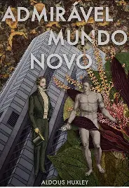 Admirável Mundo Novo – Aldous Huxley
- 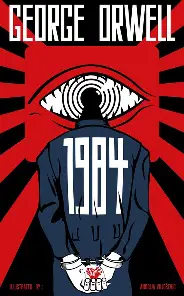 1984 – George Orwell
 Fahrenheit 451 – Ray Bradbury
Fahrenheit 451 – Ray Bradbury
- 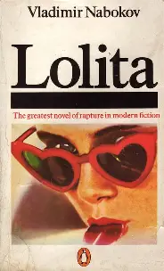 Lolita – Vladimir Nabokov
- 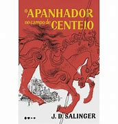 O Apanhador no Campo de Centeio – J.D. Salinger
- 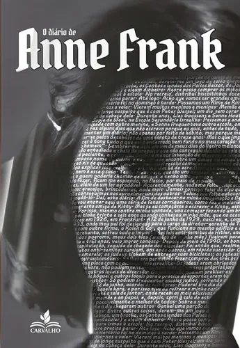 O Diário de Anne Frank – Anne Frank
Livros Mais Lidos do Brasil em 2025
- 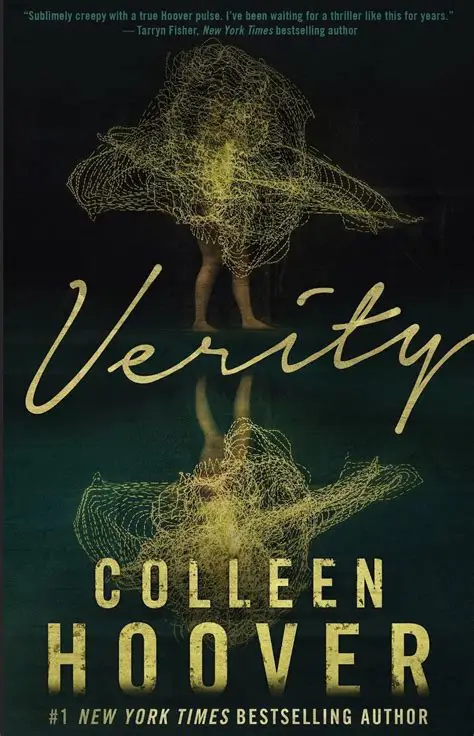 Verity – Colleen Hoover
- 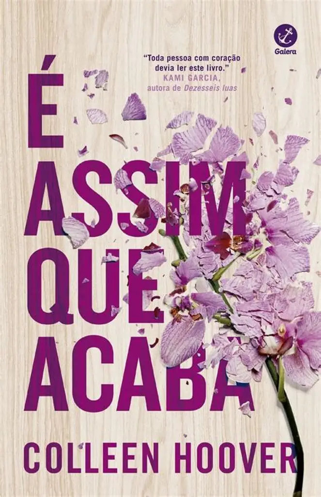 É Assim que Acaba – Colleen Hoover
- 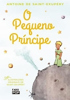 O Pequeno Príncipe – Antoine de Saint-Exupéry
- 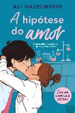 A Hipótese do Amor – Ali Hazelwood
- 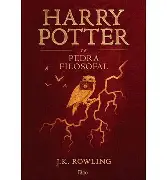 Harry Potter e a Pedra Filosofal – J.K. Rowling
- 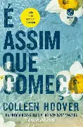 É Assim que Começa – Colleen Hoover
- 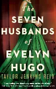 Os Sete Maridos de Evelyn Hugo – Taylor Jenkins Reid
- 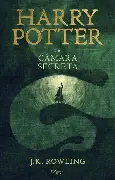 Harry Potter e a Câmara Secreta – J.K. Rowling
- 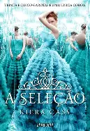 A Seleção – Kiera Cass
- 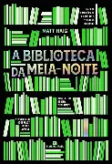 A Biblioteca da Meia-Noite – Matt Haig
Sugestões de Leitura
-
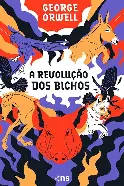
A Revolução dos Bichos – George Orwell
Uma sátira política sobre autoritarismo, inspirada na Revolução Russa. -
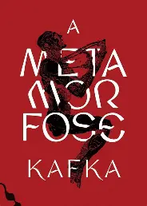
A Metamorfose – Franz Kafka
A história surreal de um homem que acorda transformado em um "inseto". -
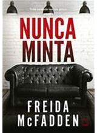
Nunca Minta – Freida McFadden
Suspense psicológico com um casal preso em uma mansão misteriosa.
Por Gabrielli e Thayna